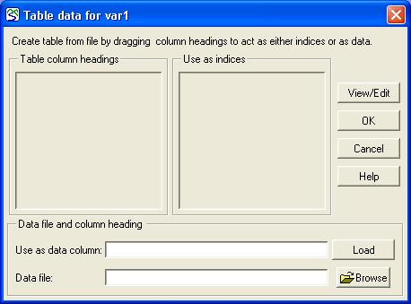
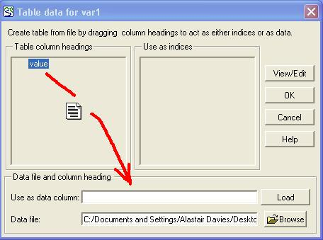
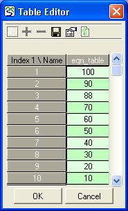

The table dialogue window is used to create a table from data stored in a file. The table dialogue is invoked from two different places. It is used by the equation dialogue box to create a table for use by the table function. It is also used by the file parameter dialogue box to create a table for a fixed parameter.
Each table has zero or more indices, which are used to extract a particular item of data from the table in your model. If there is no index, the row number is used instead.
In order to be able to access the data, they must be stored in a certain format in the file. The file should be rectangular, consisting of a certain number of rows and a certain number of columns. The number of columns corresponds to the number of variables in the file (or, in database terms, the number of fields for each record). The file has as many records as there are units for which data were recorded, plus a single header record. The format is comma-separated values (CSV) which means that each value is separated by a comma from the preceding value. There is no comma at the end of a record. Most software packages that handle data can create files in this format.
The following is an example of a simple file containing data on the age, height and diameter of five trees:
age,
height, diameter
25, 15, 0.31
32, 17, 0.37
16, 10, 0.2
19, 12, 0.23
21, 14, 0.29
To create a new table using the dialogue
involves several steps. The first step
is to select the file from which the table data are to be taken. To do this, click the “Browse” button on the
dialogue box. The file path name is then
displayed in the edit box “Data file”.

After selecting a CSV file, the table dialogue reads and displays the column headings in a list box. The column headings are taken from the first row of the file. The rest of the file is not checked, at this stage, for speed.
One (and only one) of these headings is used to designate the data column. Drag this column heading from the list box to the edit box labelled “Use as data column”. In the example file shown above, you would have the choice of “age”, “height” or “diameter” and could drag any one of these to the data column edit box. The cursor changes shape while you are dragging the heading, to represent the data moving.

If you wish to create one or more indices to the data column, drag the heading corresponding to the desired index into the list box labelled “Use as index”. To delete an index, drag the column heading from the “Use as index” list box back into the “Table column headings” list box. It is not always necessary to designate an index. If none is given, the row number is used to access each record.
You can view the data you have loaded in a separate window. To do this, click the View/Edit button. You can make changes to the data in this window, and click OK to accept the changes or Cancel to abandon them. You can also save the data to a file. Note that if you extracted the data from a file containing more than one variable, you should not save the extracted data to the same file, or you will lose the other variables.

If a table already exists for the component, you will not need to follow the above steps again. If you wish to see or change the data in the table, you can click the View/Edit button. This will present you with the Table Editor, as above. If you wish to extract data from a different file, you can use the Browse button, as above, to begin as if creating a new table. If the data in the file have changed since the table was created, you can use the Load button, to extract the new data using the same specification of column heading and indices. (If the file is not present, perhaps because you are working on a different machine from where the model was created, clicking the load button will give an error.)
When preparing to use multiple indices, it is often best to arrange the index columns in the data file in a logical sequence, for example as follows:
|
X |
Y |
Height |
Width |
|
1 |
1 |
12.3 |
1.3 |
|
2 |
1 |
12.7 |
1.2 |
|
3 |
1 |
13.1 |
0.9 |
|
1 |
2 |
11.8 |
1.5 |
|
2 |
2 |
12.3 |
1.4 |
|
3 |
2 |
11.7 |
0.9 |
|
1 |
3 |
13.5 |
1.0 |
|
2 |
3 |
12.1 |
1.1 |
|
3 |
3 |
13.0 |
1.1 |
For this file, two indices would be selected, the x- and y-values, together with one data column, either the height or the width. If both were needed, it would be necessary to have two variables, and to create a table in each one that each used one of these columns. The indices systematically provide values for a three-by-three grid. This makes it easy to extract the data using the first of the techniques outlined above.
In: Contents >> Working with equations